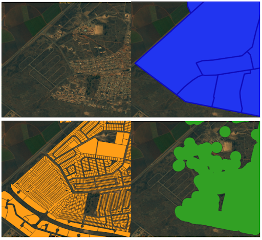

Mapping Spatial Apartheid
In this work, we develop a dataset and a classifier to study the evolution of spatial apartheid in South Africa. Our dataset was created using polygons demarcating land use, geographically labeled coordinates of buildings in South Africa, and high resolution satellite imagery covering the country from 2006-2017, and four classes of neighborhoods: wealthy areas, non wealthy areas, non residential neighborhoods and vacant land.
